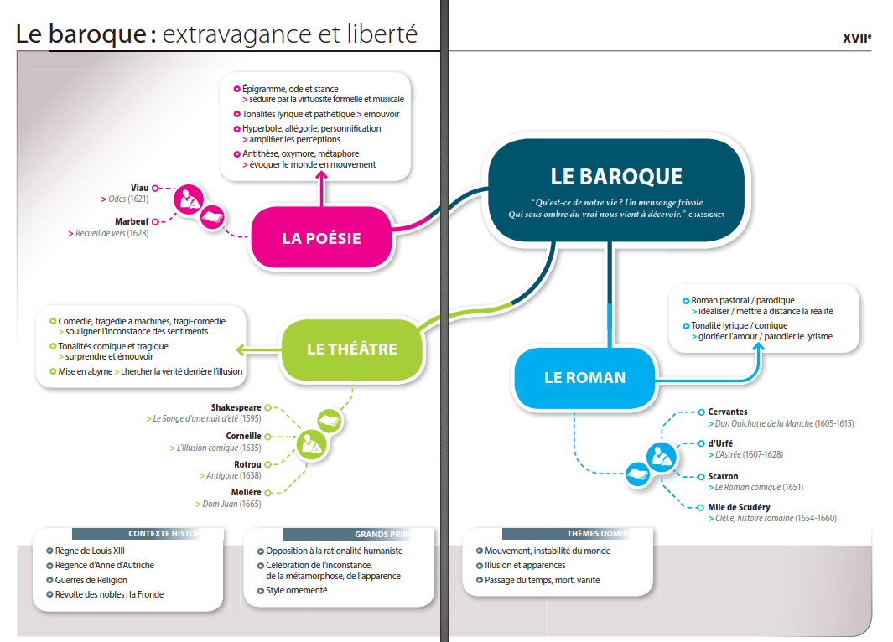

Les mouvements littéraires
Antiquité-Naissance des genres littéraires

Moyen-âge-De l'épopée à la farce
XVIes. - L'humanisme : la foi en l'Homme
XVIIes. - Le baroque : extravagance et liberté

XVIIes. - Le Classicisme : l'équilibre des règles
XVIIIes. - Les Lumières : le triomphe de l'esprit philosophique
XIXes. - Le Romantisme : l'apogée du lyrisme
XIXes. - Le Réalisme et le Naturalisme : le miroir du monde

XIXes. - Le Parnasse et le Symbolisme
XXes. - La poésie : en quête de modernité
XXes. - Le roman : le renouvellement du personnage
XXes. - Le théâtre : de l'engagement à l'absurde
XXes. - La littérature contemporaine : expérimentations et nouvelles voies